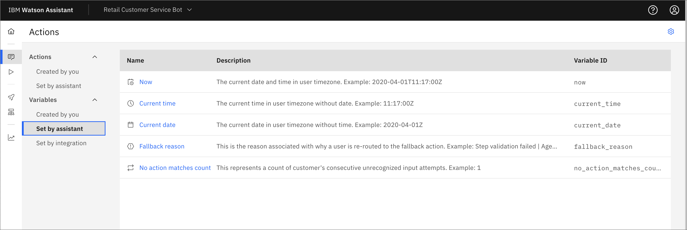

chatbot アシスタント
Watson Assistantは、自然言語を用いたインテリジェントなインターフェースを提供することで、お客様の問題解決をサポートします。アシスタントサービスが提供するツールを、お客様に直接役立つスキルで使用することができます。GUIツールとAPIの柔軟性を組み合わせることで、AIを使ったアプリケーションやツールをシンプルかつパワフルにパワーアップすることができます。
あなたが学ぼうとしていること¶
1.アシスタントサービスと最初のアシスタントの作成 1.アクションの作成 1.条件付きアクションの追加 1.変数付きアクションの追加 1.変更を公開する 1.結論
アシスタントサービスの作成と最初のアシスタント¶
1.Watson Assistant を使用するための最初のステップは、サービスのインスタンスを作成することです。これはIBM Cloudを使って行います。インスタンスに意味のある名前を付けます。所属したいリソースグループを選択し、必要に応じてタグを追加して、「Create」をクリックします。

1.Launch Watson Assistant をクリックします。
をクリックします。
1.上部のドロップダウンメニューから、Create new + をクリックします。
をクリックします。
1.インスタンスに名前と任意の説明を付けて、Create Assistantをクリックします。

アクションの作成¶
1.新しいホームページでは、ナビゲーションの手順に従い、Watson Assistantについて学ぶをクリックして1分間のビデオを見ることができます。続けてCreate your first actionをクリックするか、左のナビゲーションパネルを使ってActionsのアイコンを選択します。

"What does your customer say to start this interaction? "と聞かれます。このチュートリアルでは、「What are your store hours?」と入力し、Saveをクリックします。

1."We are open from 8:00 AM to 9:00 PM every day. "などの文言を入力します。お客様は何も入力する必要がなく、質問にも答えているので、Define customer responseセクションを空にして、デフォルトのContinue to next stepのままにしておきます。

1.それでは、今までの成果を試してみましょう。右下のPreviewをクリックします。チャットボットは "Welcome, how can I assist you? "と始まります。What are your store hours?」というテキストを入力し、矢印をクリックするか、キーボードのEnter/Returnを押してください。入力した "We are open from 8:00 AM to 9:00 PM every day. "という回答が返ってくるはずです。

1.反時計回りの矢印をクリックして、ボットをリセットします。今度は、「When are you open?」と入力します。今度は、ボットが「I'm afraid I don't understand.Please rephase your question." と答えます。ボットが理解できるように、お客様の質問にいくつかの選択肢を追加する必要があります。左上のCustomer starts withボックスをクリックして、ここに戻り、質問の別の言い回しを追加します。

1.プレビューウィジェットを使用するには、保存する必要があるため、右上の保存アイコンをクリックします。アシスタント設定の歯車アイコンをクリックすると、自動保存がオンになっていることがわかりますが、この保存は、ステップを切り替えたときに実行されます。次に、プレビューウィンドウで、フレーズのリストにある「開く」などと入力して、再度テストしてみてください。正しい反応が得られるはずです。
1.プレビューウィンドウで、ボットが「There are no additional steps for this action.新しいステップを追加するか、アクションを終了してください。" と表示されていることに注意してください。アクションを終了しましょう。左上のConversationステップをクリックして戻り、「And then」のドロップダウンを「End the action」に変更します。

1.変更を保存して、プレビューをリセットします。これで、店舗の営業時間が指定された後にアクションが完了するはずです。
条件付きアクションの追加¶
1.今度は、"Where are you located? "という質問に答えるアクションを追加します。ホーム画面から「新しいアクション+」をクリックします。

1.What does your customer say to start this interaction? "に対して、Where are you located?と入力します。
1.アシスタントの発言」の項目に、「ダウンタウンとリバーサイドの2つの場所があります。あなたはどちらに近いですか？
1.顧客の反応」の項目で、「オプション」を選択し、「ダウンタウン」と「リバーサイド」を入力してください。この情報は前のステップから保存されているので、Allow skipping or always ask?のデフォルトをSkip if the customer already given this informationにしておくことができます。購入前の確認のような場合には、Always ask for this information, regardless of earlier messagesを選択するとよいでしょう。
1.Apply*をクリックします。

1.別のステップを追加し、今度はプルダウンメニューを使用して、Step 2 is takenをwith conditionsに変更します。条件には、「1.このすべてが真である：We have 2 locations...」がDowntownであることがあらかじめ登録されているはずです。クリックしてみると、is から is not へ、あるいは All of this is true から Any* へと、さまざまな方法でロジックを変更できることがわかります。さらに条件を追加したり、条件のグループ全体を追加することもできます。ここで、「アシスタントの発言」に、「ダウンタウンの店舗は3210 Main St.で、電話番号は303-867-5309です」というような回答を追加することができます。

1.If We have 2 locations is Riverside」と同様の条件を追加することができます。保存後、プレビューウィジェットでボットをテストし、期待通りに動作することを確認します。次の例では、「あなたのロケーションは何ですか」と尋ねていますが、代替案は追加していません。Watson Assistant の曖昧さ回避機能は、私の行動のためのオプションとともに、「Did you mean?私は "Where are you located? "をクリックするか、テキストを入力して希望の回答を得ることができます。また、元の質問にいくつかの代替フレーズを追加する必要があることも分かりました。

変数を使ったアクションの追加¶
ここで、変数の仕組みを見てみましょう。Watson Assistant が設定する変数には、Now (現在の時刻と日付)、Current time、Current date* などがあります。

1.自分で作成した変数と新規変数+をクリックします。username`という名前を入力すると、変数IDに同じ名前があらかじめ入力されていることに気がつきます。これは、APIで読み取ったり設定したりすることができる名前で、必要に応じて異なる名前にすることができます。任意の説明を入力して、Save**をクリックします。

1.アクション→Created by youとNew action +をクリックし、インタラクションの開始位置にI have a question about my accountと入力します。Assistant saysには "What is your username? "と入力し、Customer ResponseにはFree text*を選択します。
1.New step +をクリックして、Fxアイコンをクリックして変数を追加します。新しい値を設定する」をクリックし、「セッション変数」→「ユーザー名」を選択し、「宛先」には*1.あなたのユーザー名は何ですか？.

1.Assistant saysのレスポンスを編集し、Hello.Welcome backと入力し、01-0アイコンをクリックして変数を挿入します。ドロップダウンメニューから セッション変数->ユーザー名* を選択します。

1.これをテストすると、アシスタントのレスポンスにユーザー名が挿入されていることがわかります。

1.Where are you located? "のアクションに戻って、最後（3番目）のステップをクリックし、次にNew step +をクリックすると、アクション変数を使用できます。Assistant saysのボックス内に、テスト「We hope to see you soon at our`」を追加し、01-0アイコンをクリックして変数を挿入します。01-0アイコンをクリックして変数を挿入します。Action variablesの下にある"1. We have two locations... "*を選択すると、挿入されます。

1.レスポンスをスムーズにするために、テキスト location. を追加し、And then の部分を End the action に変更します。これで、テスト時にダイアログで使用されているロケーションが表示されます。

変更点の公開¶
変更を最終的に公開することができます。
1.左側のナビゲーションにある "ロケット "アイコンをクリックして、自分の更新内容を確認します。次に、「公開」をクリックします。

1.説明を追加して、Publishをクリックします。変更内容が新しいバージョンとして公開され、デプロイされたチャットボットに表示されます。
Conclusion¶
このチュートリアルでは、初めてAssistantを搭載したチャットボットを作成する手順を説明しました。Assistant サービスの作成、いくつかのアクションの追加、条件付きロジックと応答内の変数の使用について説明しました。探索して使用する他の Watson Assistant 機能があり、これらは Watson Assistant ラーニングパスの他のチュートリアルで説明されています。